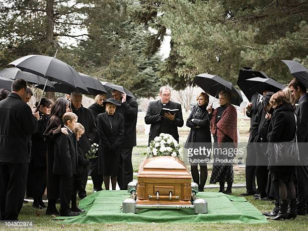

classes of movies
comedy
professional entertainment consisting of jokes and sketches, intended to make an audience laugh.
- senior year
- vivo
- work it
tragedy
a play dealing with tragic events and having an unhappy ending, especially one concerning the downfall of the main character.
- romeo and juliet
- iphigenia
- othello
romance
a genre of fiction dealing with love in a sentimental or idealized way
- the in between
- through my window
- ride or die
adventure
a genre of fiction dealing with excitement associated with danger or the taking of risks
- the sea beast
- black crab
- the adam project
action
Action film is a film genre in which the protagonist is thrust into a series of events that typically involve violence and physical feats.
- fistful of vengance
- restless
- army of thieves